Storyline
(source: http://mortalkombat.wikia.com)
The One Being and The Elder Gods:
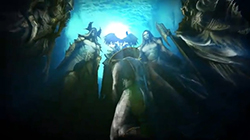{kind=link}
At the beginning of time, there only existed two beings: The Elder Gods and the One Being. The One Being gained his power by draining it from the Elder Gods. Eventually the Elder Gods declared war on the One Being to save themselves. In the end, the Elder Gods created 6 weapons called the Kamidogu. When they used the weapon, the One Being split into many pieces, although its consciousness survived. The Kamidogu became lost in 6 different pieces of the One Being. Eventually, these pieces became the realms, and life began to grow inside them. There were 6 main realms: Earthrealm, Netherrealm, Outworld, Orderrealm (Seido), Chaosrealm, and Edenia, each with a representative Kamidogu which held the essence of each realm.
The Prophecy of Armageddon
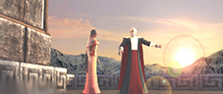{kind=link}
Not long after the creation of the realms, the Edenian protector-God, Argus, and his sorceress-wife, Delia, had two children: Taven and Daegon. Delia frequently had visions and prophecies of the future. One of the events she predicted was the destruction of all the realms due to the warriors of Mortal Kombat growing too powerful and too numerous. The Elder Gods demanded that a safeguard be put in place in order to prevent Armageddon, and left the task to Argus and his wife. Delia predicted that the climax of battle would take place at a crater within the Edenian Southlands. For this reason, Argus had a pyramid constructed underground at this crater, while Delia created a Fire-Spawn known as Blaze. Blaze would contain the power needed to stop the Mortal Kombat warriors. While Argus wanted all of the warriors destroyed, Delia wished a more merciful approach; stripping the warriors of their powers. They decided that they would put their two children in competition, and whichever one defeated Blaze would be gifted with the power to become the new protector of Edenia. On their way to confronting Blaze, each brother would have to retrieve a sword from one of their father's temples in Earthrealm, and a suit of armor from one of their mother's temples, also in Earthrealm. One suit of armor would mean that all of the Mortal Kombat warriors were destroyed, the other would mean that they were stripped of their power. In effect, this would be like a coin toss between Argus and Delia, to decide which outcome would be achieved. The two brothers were then asked to Argus' temple in Edenia, where they were ambushed and placed in stasis. They were both placed within the mountains somewhere in Earthrealm, with a Dragon to watch over them. The Golden Dragon, Orin , watched over Taven, whilst the Red Dragon Caro watched over Daegon. When Blaze gave the signal, the Dragons would wake their protectee from stasis to begin the quest.
Shinnok and the War for Earthrealm
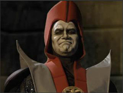{kind=link}
The Elder Gods watched over the realms, and governed the realms with untold wisdom; but one such Elder God, known as Shinnok, gave into greed and illusion of ultimate power and wanted the new realm of Earth for himself; however, the Elder Gods had appointed the young God of Thunder known as Raiden to protect Earth. The battle between Raiden and Shinnok was fierce, sending Earth to its near destruction and plunging it into centuries of darkness. Raiden discovered that Shinnok entered the realm through the power of a mystical amulet. It allowed Shinnok to weaken the borders of a realm and therefore enter the realm without challenge and keep the Elder Gods from interfering. Forced to choose between destroying the budding Saurian civilization or to give Earthrealm to Shinnok, Raiden chose the former and stripped Shinnok of the amulet before, with the aid of Elder Gods, banishing the fallen Elder God to the Netherrealm. The Netherealm has existed since the beginning of time and has had many names. Whether it's known as Hell, Hades, Gehenna or Pluto, it has always had the same purpose: to act as the final home of those who have done wrong. When Shinnok awoke in the Netherealm, he found himself under attack by Lucifer, the leader of the fiery realm. Lucifer used the souls of those whom Shinnok himself had banished to the Netherealm to attack the Elder God. Shinnok was quickly beaten and found himself in the depths of Hell.
Legend decrees that if one were to obtain all six Kamidogu with the Sacred Amulet, he or she would be granted ultimate power, merging all that exists and bringing the return of the One Being. To prevent the destruction of the realms, Raiden created a massive temple deep within the mountains of Asia to house the amulet, and appointed four guardians to serve as protectors of the amulet. Each of these guardians represented one of the elements of which the realm was comprised: Wind, Earth, Water, and Fire. As long as the amulet remained on Earth, Shinnok would remain trapped in the Netherrealm.
For thousands of years Shinnok laid in torment from Lucifer in the Neatherrealm, until stumbling across a mysterious sorcerer by the name of Quan Chi. Once an Oni from the Neatherrealm, he had transformed his appearance upon learning sorcery, even gaining the power to travel throughout all of the planes of reality without detection from any of the Gods.
Quan Chi told Shinnok that he would help him escape from his prison and defeat Lucifer. All Quan Chi wanted in exchange was power and the right to rule at Shinnok's side. Shinnok agreed, and the two waged a war in the Netherealm that lasted for centuries. They eventually beat Lucifer and took control of the Netherealm. Shinnok was now the ruler of the dead realm, but he wasn't happy with his conquest. The Netherealm is nothing more than fire and brimstone, and he only rules over the grotesque demons that inhabit the realm. Shinnok wants more, and what Shinnok wants, Quan Chi must try to arrange.
Onaga's Reign
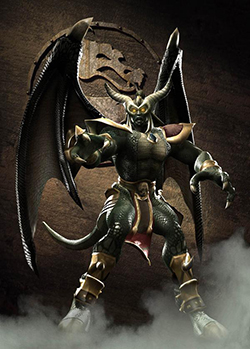{kind=link}
At some unknown point in history ruled an emperor in the realm of Outworld called Onaga the Dragon King. Onaga was the first Emperor of Outworld, uniting an otherwise divided realm.
He began to conquer other realms, merging them to add that realm's power to Outworld and expand his ever-growing domain. Onaga's secret to victory was his undefeatable and seemingly invincible army. Onaga's heart gave him the ability to raise the dead, allowing him to revive his dead soldiers over and over. However, Onaga wished to live forever; using the last dragon egg, his followers formed a spell that would transfer his body into the tiny dragon inside and with it, be granted eternal life. It was at this point Shao Kahn, who had been a trusted advisor at Onaga's side, decided to strike. Onaga was poisoned, and with Onaga gone, Shao Kahn took control. However, unlike Onaga, Shao Kahn was not able to rule Outworld as a united realm.
Shao Kahn's Reign
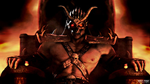{kind=link}
Like Onaga before him, Kahn sought to expand his domain and his power through conquests of other realms. He attacked and conquered many smaller realms, slowly building up power over thousands of years. Eventually, he built up enough strength to take on another realm equal to Outworld's size, to gain even greater power: the lush and fertile realm of Edenia. To conquer Edenia, Kahn had to win the sacred tournament, and if he succeeded, it would allow him to merge the two realms.
Despite the Edenian warriors' best efforts, Outworld won its 10th consecutive Mortal Kombat tournament. Edenia's blue skies were ripped apart as the portals began to open, and Shao Kahn's invasion force entered the realm. The ruler of Edenia, King Jerrod, was murdered; Kahn took his wife Sindel as his queen, and adopted her daughter Kitana as his own, after Sindel convinced him of her worth, having the young princess trained as his personal guard, and as an assassin. However, Sindel could not bear the thought of being Kahn's queen and committed suicide. However, Shao Kahn held her soul in Outworld, stopping her transition to the afterlife, not willing to let his beloved queen go so easily.
The Mortal Kombat tournament
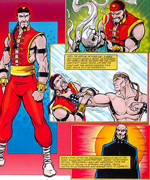{kind=link}
A few millennia had passed, now with Edenia conquered and other realms added to Outworld, Shao Kahn turned his sights to the conquest of Earthrealm. Shao Kahn sent Shang Tsung to establish the sacred tournament as a competition between his armies and Earthrealm. The prize for the winner of Mortal Kombat would be that the champion would not age for 50 years until the start of the next tournament. Kahn would only be allowed take Earthrealm if he won ten of these tournaments in a row. Raiden rallied the best fighters of Earth into the White Lotus Society, a group established to discern a champion every 50 years to defend Earth in the tournament. The Great Kung Lao was one such warrior defeating Shang Tsung and becoming Grand Champion. Lao only kept the title for one generation before eventually falling to Shang Tsung's then-new secret weapon, a Shokan prince named Goro. Goro proceeded to win the following eight tournaments, giving the Outworld warriors nine consecutive victories.
Imprisoned in death for centuries after his betrayal by Shao Kahn, the Dragon King secretly worked to revive his physical body. By transferring his essence into an apparition, he appeared to Shujinko, a very promising warrior who was set to be the chosen Earthrealm kombatant in an upcoming Mortal Kombat tournament. Claiming to be an emissary of the Elder Gods named Damashi , he tricked Shujinko into embarking on a quest to obtain the Kamidogu from the various realms and placing them in the Nexus, a special location created between the realms to ease the travel of the Champion of the Elder Gods.
Before the events of the next Mortal Kombat tournament, Quan Chi had recruited Sub-Zero the Elder to help him retrieve the ancient amulet. Sub Zero proceeded to venture through Earthrealm, defeating the gods of Wind, Earth, Water, and Fire and obtained the amulet. Sub-Zero then delivered the amulet to Quan Chi. Quan Chi later gave the amulet to Shinnok, which happened to be a fake, and kept the real one for himself. Raiden then confronted the Lin Kuei ninja and revealed to him his mistake by giving Quan Chi the amulet. Reluctantly, Sub-Zero then proceeded to return to the Netherrealm and retrieve the amulet from Shinnok. Sub-Zero was successful and preserved the peace of all reality for the time being.
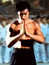
Two years later, Earth rallied some of its best fighters in order to win the tenth tournament and preserve Earthrealm's freedom. Amongst the established warriors were Liu Kang, Sonya Blade, and Johnny Cage. With the help of Raiden, the Earthrealm warriors were victorious and Liu Kang became the new champion of Mortal Kombat. Scorpion, who was a rival clansman of the Lin Kuei, and the same man Sub-Zero killed years before, fought one another again. In the end however, Scorpion slew Sub-Zero in retribution for his own murder.
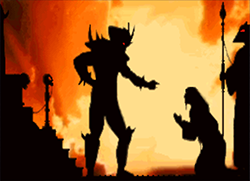
Unable to deal with Shang Tsung's failure, Shao Kahn ordered the Tarkatan horde to raid the Wu Shi Academy. The Tarkatan horde killed most of Liu Kang's fellow monks. This enraged Liu Kang enough to follow them into Outworld. He was not alone. Kung Lao, Johnny Cage , and Major Jackson Briggs, who was in search of his missing subordinate, Sonya Blade, followed right behind Liu Kang into the realm to seek revenge. Though they were running into the Emperor's trap, they eventually thwarted Shao Kahn's sinister plan and rescued Sonya as well. Shao Kahn responded by resurrecting Queen Sindel on Earth and stepping across the realms to claim her, thus successfully merging it with Outworld. The Earthrealm warriors rallied once more, defeating Shao Kahn and ending his threat. He was severely wounded, but most importantly, when he was defeated, Edenia was freed from Outworld, and was returned to a whole realm.
.gif){kind=link}
{kind=link}
Merging with the DC Universe (non-canon)
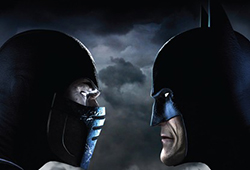{kind=link}
Around the same time as Shao Kahn's defeat, Superman had just defeated Darkseid; however, Darkseid and Shao Kahn's defeat somehow caused them to merge into a single being known as Dark Kahn and cause the kombatants & DC heroes/villians to be consumed by a pure Rage and fight against each other. As a result, the two universes began to merge. Eventually, one member from each side remained: Raiden and Superman. Upon discovering that they both have common enemy (Dark Kahn), they team up to defeat Dark Kahn, causing him to split back into Shao Kahn and Darkseid, on opposite universes. Shao Kahn would be trapped in the fragmented Phantom Zone, while Darkseid was punished by the Elder Gods and sent to the Netherrealm.
The Return of Shinnok
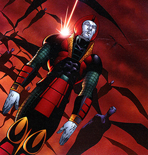{kind=link}
During his time in the Netherrealm, Shinnok rallied an army of allies to help him avenge his losses. With the help of disguises and allies in Earthrealm (Noob Saibot) and Outworld/Edenia (Tanya), Shinnok escaped to the newly restored Edenia, eventually returning to the heavens. Shinnok proceeded to kidnap Queen Sindel and Princess Kitana in the process of taking over Edenia, then proceeded to destroy as much as he could in the heavens, including murdering several of the Elder Gods and many of the lesser gods.
Fujin and Raiden escaped to Earthrealm, where they rallied the Earthrealm warriors for yet another realm-threatening battle. After a long and arduous fight, Liu Kang eventually defeated Shinnok, emerging victorious as Mortal Kombat champion once more. Shinnok was banished back to the Netherrealm, along with Quan Chi when he was about to banish Scorpion to the netherrealm Scorpion grabbed him and they both were banished.where he was believed to have been killed. Scorpion was sent to the Netherrealm with Quan Chi, as it was revealed that the Sorcerer had killed his family, and the Ninja was out for vengeance.
The Deadly Alliance
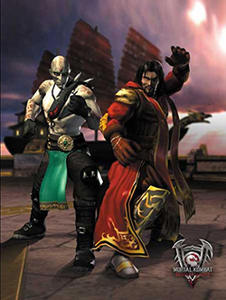{kind=link}
While in the Netherrealm, Quan Chi discovered much information about the past, including the existence of the Dragon King's seemingly immortal army. He managed to escape from the Netherrealm using a secret portal and approached Shang Tsung with an offer to join forces and rule the realms together. Quan Chi established a Soulnado in Shang Tsung's fortress with the agreement that Shang Tsung would use some of the souls to animate the army. Together, they approached Shao Kahn and attacked him, seemingly killing him in his weakened state. It was later revealed that they killed a clone, and that the real Shao Kahn had escaped. The Deadly Alliance then double-teamed and killed the only one who could possibly stop them, the Mortal Kombat Champion, Liu Kang.
Raiden once again rallied the Earthrealm soldiers to stop this impending threat. Also included in the battle were newcomers Li Mei and Nitara. Nitara's realm, Vaeternus , had been merged into Outworld against her will, whereas Li Mei was trying to free her land from The Deadly Alliance. Others joined the fight as well, including the newly restored Cyrax (now working for the U.S. Special Forces Unit with Jax and Sonya), as well as Kenshi, a warrior who had been blinded by Shang Tsung's treachery and who sought revenge. Unfortunately, these heroes were unable to stop the Deadly Alliance, as the two sorcerers overcame all foes, destroying the majority of the opposition.
The Return of the Dragon King
It had taken Shujinko 41 years to complete the quest Damashi had given to him but finally Shujinko had collected the sixth and final Kamidogu from Edenia. Shujinko placed the Edenian Kamidogu on the altar in the Nexus with the other five. After the Kamidogu had been collected, the egg Onaga was imprisoned in hatched; the Dragon King resumed his physical form by merging with the ninja Reptile. Back in the Nexus Shujinko began to wonder why the six Kamidogu were not transported to the Elder Gods as he had been told, it is then Onaga emerged into the Nexus to confront Shujinko revealing him to be the avatar Damashi all along. Onaga reveals his true plan to obtain ultimate control over all that exists once he claims Shinnoks amulet, currently in possession of the sorcerer Quan Chi. Shujinko's life long quest will finally end here, in death. Shujinko escaped however into the Earthrealm portal.
Meanwhile, Raiden (with his allies laying defeated on the entrance of Shang Tsung's Palace), faced the Deadly Alliance on his own. Despite managing to hold his own for a time, he was ultimately defeated by their combined power. With their victory in hand, Shang Tsung and Quan Chi quickly turned on each other, each looking to grab all the power for themselves mainly for the reason that Tsung wanted Chi's amulet. Quan Chi emerged victorious, but once again, the victory was short lived, as the Dragon King returned to Outworld. Quan Chi proceeded to try to stop him, and the quickly recovering Shang Tsung and Raiden aided as well, forming an impromptu alliance against the greater threat. They were unable to defeat the Dragon King, however, as even Raiden releasing his godly essence and destroying everything around him had little effect on the revived former ruler of Outworld who was now in possession of Shinnok's amulet which had been held by Quan Chi.
Sometime later Raiden's essence, now corrupted from his encounter with Onaga for it was tainted with Onaga's dark magic, soon gathered again in the Earthrealm. He had now became furious with the way Earthrealm's inhabitants had treated their own realm. He became even more enraged when he learned that Shujinko had foolishly unleashed the Dragon King by attaining the Kamidogu of various realms for him. With that, his patience exhausted, Raiden then decided he was going to punish those who placed Earthrealm in harm's way. He tried to brutally slay Shujinko for his errors, but Shujinko was able to survive, Raiden turned his attention towards Liu Kang's corpse.
Removing Liu Kang's body from its grave, Raiden took it to an underground temple that belonged to an ancient sect of necromancers called the Houan, whom he had destroyed centuries earlier. Binding Kang's body with enchanted shackles the Houan had used to control their revived undead, Raiden spoke the enchantments etched into the temple's walls that revived his former ally, infusing it with a thunderclap of lightning. The corpse of Liu Kang was now the enforcer of Raiden's will, and he sent it on a mission to wreak havoc on those he believed did harm to Earthrealm.
Onaga revived the Earth warriors as his pawns and used them and a newly-forged alliance with the Tarkatan horde to keep Edenia's army at bay while he searched for the spells that would allow him to fuse the Kamidogu together and grant him supreme power. However, just as he was about to do so Shujinko rallied the remaining warriors against him and in a moment absorbed their combined fighting power. Empowered beyond the Dragon King's own expectations, Shujinko shattered each of the six Kamidogu, the source of his invulnerability. Weakened and in defeat Onaga attempted to retreat only to vanish into thin air, Nightwolf had traveled deep within the Netherrealm, drawing a binding symbol on the ground and chanted the ancient words that would draw the spirit of Onaga. Nightwolf had used a method passed down to him by his forefathers, the 'Sin Eater', he had absorbed all the sins of his people before venturing into the Netherrealm. When Onaga's spirit appeared before him on the mystic symbol Nightwolf released the sins he had carried and their weight bound Onaga to the Netherrealm.
Armageddon
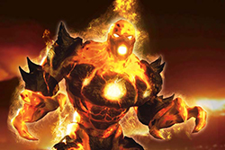{kind=link}
During the Dragon King's conquest, the beginning of Armageddon, previously predicted by Delia, began. Daegon however, had mistakenly been awakened centuries early, as Caro mistook the loss of Blaze's contact (possibly when he was kidnapped in order to watch over the Dragon King's eggs) as the signal to begin the race.
Daegon discovered what the aim of the quest was, and became obsessed with the power which would be granted to him. He set up the Red Dragon clan (to represent the Red Dragon that awoke him) and enslaved Caro in order to use him to create portals.
The Red Dragon's primary aim was to find Blaze and to assassinate Taven, although they were also a powerful crime organization. When Taven was finally awoken at the correct time, during Onaga's return, he was constantly attacked by Red Dragon warriors. Eventually, Taven made his way to his father's temple, only to find the weapon that was meant to be there had been stolen. As he finally made his way to his mother's temple, which was now occupied by the Lin Kuei, he managed to find the suit of armour that had been placed for him. During this time, Quan Chi assembled other warlords of Darkness, including Shao Kahn, Shinnok, Onaga and Shang Tsung. Quan Chi had managed to find out about the power that Blaze contained, and the power that would be passed as a gift to the one who defeated him and in the process of discovering this, had killed Orin, Taven's protector Dragon. The forces of evil united in order to claim this power, whilst the forces of good united in order to either stop evil, or claim the power for themselves for their own ends.
The battle came to a head in the crater within the Edenian ruins, just as Delia had predicted. As Taven made his way to these ruins, he encountered Blaze who revealed the true nature of this quest: to either use the power to destroy all of the Mortal Kombat warriors, or simply strip them of their power. Daegon revealed that it was he who had killed their parents, with the very weapons that they had intended be used to fight their way to Blaze (as it became apparent that Daegon was the one who had stolen Taven's sword). Taven and Daegon fought, with Taven emerging the victor. As this happened, the warriors clashing within the crater were suddenly stopped as the huge pyramid placed by Argus millennia earlier rose from the ground, with Blaze, now empowered and huge in size, waiting at the top. The warriors began to make their way to the top, fighting amongst themselves and turning on one another in order to claim this prize. With Daegon defeated, Taven took his sword and made his way into the crater himself, in order to defeat Blaze as he was destined to. In the end, however, the one who killed Blaze wasn't Taven; it was Shao Kahn.
Back To The Past
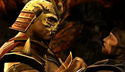{kind=link}
The story starts taking place after the events of Armageddon, where the Kombatants from both sides are dead, leaving only Raiden and Shao Kahn. Defeated and about to be dealt the final blow, Raiden used his last attempt to cast a spell on his amulet, now shattered, to contact his past self and quote "He Must Win!" before he was killed.
In the events of the first game, the Raiden from that era appears with Liu Kang in the Mortal Kombat tounament hosted by Shang Tsung, now possessing visions of the events from his future self and his amulet cracked. After the first two rounds of the tournament, with Johnny Cage defeating both Reptile and Baraka, Raiden and Liu Kang met with Cage and explained to him the reason and purpose of Mortal Kombat, which he does not believe. Cage then finds Sonya Blade (whom Cage had flirted with earlier) while she was contacting the Special Forces, and he offers to help her out. Initially hostile, Sonya warms up to Cage after he saves her from the Black Dragon mercenary, Kano, during which time Cage begins to understand the truth in Raiden's words. Later, Sonya rescues Jax with assistance from Raiden. The Thunder God then explains to the four Earthrealm warriors his visions and what they foretell.
Later, Raiden receives more flashbacks whereby he sees the ninja spectre Scorpion killing Sub-Zero and a new warrior forming. Raiden confronts him and requests him to spare Sub-Zero's life, offering to have the Elder Gods restore his clan, the Shirai Ryu, back to the mortal realm, causing Scorpion to accept his request. In Shang Tsung's Throne room, Scorpion later confronts Sub-Zero, fighting him in The Netherrealm and defeated him there. Scorpion then honor's Raiden's request not to kill Sub-Zero, until Quan Chi appeares and shows Scorpion visions of Lin Kuei forces attacking the Shirai Ryu clan and Sub-Zero killing his wife and child. This enraged Scorpion, causing him to ignore his deal with Raiden, killing Sub-Zero. He returns to the Throne Room in regret holding the burned skull of Sub-Zero and disappears screaming in rage. Cyrax is later contracted by Shang Tsung to kill Cage, but is rebuffed by Raiden for doing so. Cyrax defeats Cage in their match, but honors Raiden's wish and lets Cage live. Cyrax is confronted by Sektor regarding the interaction, but defeats him in a hand-to-hand fight.
Meanwhile, Kitana attempts to kill Kang, but is defeated and spared. Kang then defeats Ermac, Goro and Shang Tsung in the tournament. However, despite the victory, Raiden's amulet cracks further. Disappointed with Outworld's defeat, Shao Kahn orders Shang Tsung's execution, but relents after being given the proposal of holding a second tournament in Outworld. During the events of the tournament, Kitana learns of her true past, while Jax, Cage, and Raiden attempt to rescue Sonya. Along the way, Sub-Zero's younger brother and Smoke sneak into Outworld to learn of the original Sub-Zero's fate, while Ermac maims Jax. However, due to Raiden's assistance of Smoke, Sub-Zero instead undergoes cybernetic transformation, inadvertently altering the time-line. Raiden attempts to substitute Kung Lao as the champion of the next tournament, only for Lao to be killed by Kahn after defeating Kintaro, leaving Kang to be the champion of Mortal Kombat two times in a row.
Despite Kang's seemingly fatal victory over Kahn, the latter launches an invasion of Earth. Among the response teams would be riot cops Kabal and Kurtis Stryker. Stryker and Kabal manage to defeat Kintaro, Mileena, and Reptile, but Kabal suffers severe burns from Kintaro. After defeating Ermac, Stryker is recruited by Nightwolf to aid Raiden in defending Earth. Meanwhile, Kabal has been recovered by Kano only to escape from Outworld. After defeating a cybernetic Sub-Zero and assisting Smoke in helping him, both join Raiden's defenders, composed of Liu Kang, Sonya Blade, Johnny Cage, Kitana, Cyber Sub-Zero (his humanity having been restored), Jax (now with cybernetic arms), Jade, Smoke, Nightwolf and Stryker. Sub-Zero confronts Sektor and retrieves intelligence from his databanks.
Sub-Zero would learn that Quan Chi was sacrificing Earthrealm's souls to merge Outworld with Earthrealm, and confronts his older brother (now Noob Saibot). Nightwolf halts Quan Chi's ritual. However, the interference causes Shao Kahn's forces to assault the headquarters of the Earthrealm warriors, where everyone except for Johnny Cage, Sonya Blade, Raiden, and Liu Kang, are killed by Sindel, with Nightwolf sacrificing himself to kill the empress.
During these events, Raiden realizes that Shao Kahn has to win and makes a large gamble, inadvertently killing an enraged Kang during a fight. Raiden loses to Kahn voluntarily, only for the Elder Gods to intervene and grant him tremendous power. Raiden defeats Kahn who is attacked by the Elder Gods and is taken away for punishment, and vows to rebuild Earthrealm with Sonya Blade and Johnny Cage, the last remaining Earthrealm fighters. However, Quan Chi and Shinnok decide to use the chaos to their advantage to make the Netherrealm the dominating force in order to claim both Earthrealm and Outworld for themselves.
Midway page
NetherRealm Official site
Warnerbros Official site